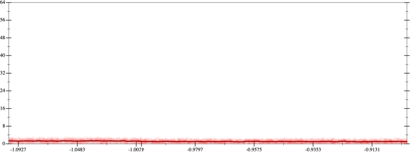
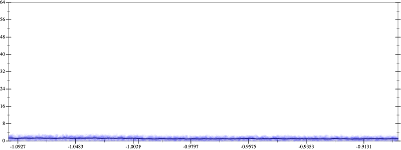
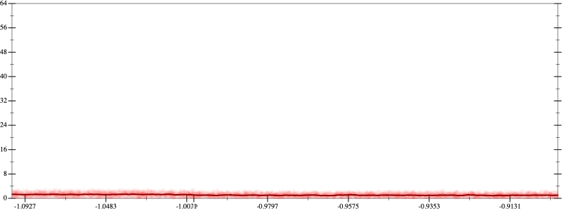
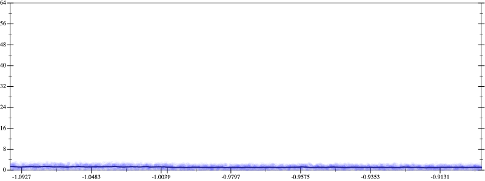

Initial program 1.1
\[\left(\left(-120.0 + 720.0 \cdot \left(x \cdot x\right)\right) + -480.0 \cdot \left(\left(\left(x \cdot x\right) \cdot x\right) \cdot x\right)\right) + 64.0 \cdot \left(\left(\left(\left(\left(x \cdot x\right) \cdot x\right) \cdot x\right) \cdot x\right) \cdot x\right)\]
- Using strategy
rm Applied add-log-exp1.1
\[\leadsto \left(\left(-120.0 + 720.0 \cdot \left(x \cdot x\right)\right) + -480.0 \cdot \left(\left(\left(x \cdot x\right) \cdot x\right) \cdot x\right)\right) + 64.0 \cdot \left(\left(\color{blue}{\log \left(e^{\left(\left(x \cdot x\right) \cdot x\right) \cdot x}\right)} \cdot x\right) \cdot x\right)\]
- Using strategy
rm Applied add-cube-cbrt1.1
\[\leadsto \left(\left(-120.0 + 720.0 \cdot \left(x \cdot x\right)\right) + -480.0 \cdot \left(\left(\left(x \cdot x\right) \cdot x\right) \cdot x\right)\right) + 64.0 \cdot \left(\left(\log \color{blue}{\left(\left(\sqrt[3]{e^{\left(\left(x \cdot x\right) \cdot x\right) \cdot x}} \cdot \sqrt[3]{e^{\left(\left(x \cdot x\right) \cdot x\right) \cdot x}}\right) \cdot \sqrt[3]{e^{\left(\left(x \cdot x\right) \cdot x\right) \cdot x}}\right)} \cdot x\right) \cdot x\right)\]
Applied log-prod1.1
\[\leadsto \left(\left(-120.0 + 720.0 \cdot \left(x \cdot x\right)\right) + -480.0 \cdot \left(\left(\left(x \cdot x\right) \cdot x\right) \cdot x\right)\right) + 64.0 \cdot \left(\left(\color{blue}{\left(\log \left(\sqrt[3]{e^{\left(\left(x \cdot x\right) \cdot x\right) \cdot x}} \cdot \sqrt[3]{e^{\left(\left(x \cdot x\right) \cdot x\right) \cdot x}}\right) + \log \left(\sqrt[3]{e^{\left(\left(x \cdot x\right) \cdot x\right) \cdot x}}\right)\right)} \cdot x\right) \cdot x\right)\]
- Using strategy
rm Applied add-sqr-sqrt1.1
\[\leadsto \left(\left(-120.0 + 720.0 \cdot \left(x \cdot x\right)\right) + -480.0 \cdot \left(\left(\left(x \cdot x\right) \cdot x\right) \cdot x\right)\right) + 64.0 \cdot \left(\left(\left(\log \left(\sqrt[3]{e^{\left(\left(x \cdot x\right) \cdot x\right) \cdot x}} \cdot \sqrt[3]{e^{\left(\left(x \cdot x\right) \cdot x\right) \cdot x}}\right) + \log \color{blue}{\left(\sqrt{\sqrt[3]{e^{\left(\left(x \cdot x\right) \cdot x\right) \cdot x}}} \cdot \sqrt{\sqrt[3]{e^{\left(\left(x \cdot x\right) \cdot x\right) \cdot x}}}\right)}\right) \cdot x\right) \cdot x\right)\]
Applied log-prod1.1
\[\leadsto \left(\left(-120.0 + 720.0 \cdot \left(x \cdot x\right)\right) + -480.0 \cdot \left(\left(\left(x \cdot x\right) \cdot x\right) \cdot x\right)\right) + 64.0 \cdot \left(\left(\left(\log \left(\sqrt[3]{e^{\left(\left(x \cdot x\right) \cdot x\right) \cdot x}} \cdot \sqrt[3]{e^{\left(\left(x \cdot x\right) \cdot x\right) \cdot x}}\right) + \color{blue}{\left(\log \left(\sqrt{\sqrt[3]{e^{\left(\left(x \cdot x\right) \cdot x\right) \cdot x}}}\right) + \log \left(\sqrt{\sqrt[3]{e^{\left(\left(x \cdot x\right) \cdot x\right) \cdot x}}}\right)\right)}\right) \cdot x\right) \cdot x\right)\]
 
